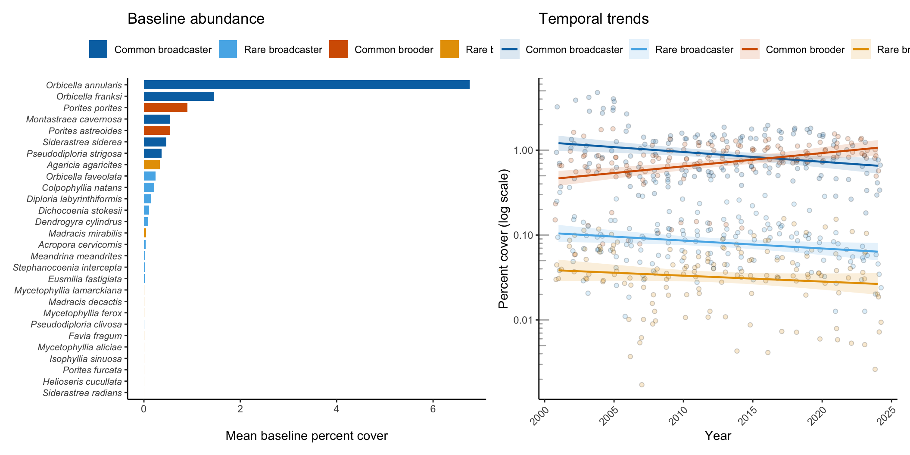
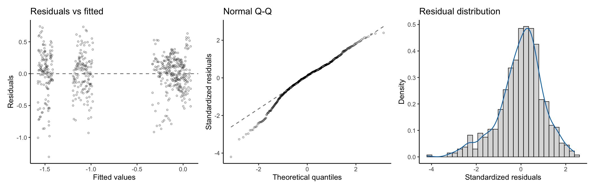

Olinger LK, Edmunds PJ, Levitan D, Smith TB, Lasker H, Feeley M, Mahoney L, Dahl A. Reproductive mode, but not rarity, influences population trajectories in corals. In Review 2026.
This page reruns the published VINPS analysis on the full monitoring record rather than stopping at the published window. The method, the code, and the site and taxon scoping are identical to the published page; only the year range differs. As new monitoring years are added to the bundled cover file, this page picks them up automatically and shows how the trajectories continue.
The coral-cover data for this analysis comes from the Reef Code benthic cover section: coral species cover download.
Summary
The Virgin Islands National Park Service program records coral cover at the species level across 7 sites around St. John and Buck Island. The published analysis covered 2001 through 2023. This page runs the same analysis over the full bundled record, from 2001 through the most recent year available. The full analysis runs below, from the coral-cover file to the figure (Figure 1) and the statistics table (Table 1). Every step is folded. Open any block to read the code and the plain-language notes.
Set the parameters for this version: open the range to the full bundled record
cover_files <-sort(list.files("../../data/cover", pattern ="s2pt5.*\\.csv$", full.names =TRUE))max_year <-max(readr::read_csv(tail(cover_files, 1), show_col_types =FALSE)$year)pub_range <-c(2001, max_year); program <-"VINPS"; taxon_level <-"species"; version <-"updated"
The analysis begins from the species-level coral-cover file and the site master table. The cover file holds one row per transect observation: a site, a year, a survey period, a coral species, and its percent cover. The site master holds each site’s program, depth, and the year monitoring began. The cover file is matched by pattern in data/cover/, so this step reads whichever species-level file is bundled, and the analysis grows as that file grows.
Step 1 code: read the bundled cover file (most-recent match) and the site master
Step 2 — Set the scope (publication range, sites, years, taxa)
The first move is the explicit publication-range clip: every downstream step runs only on years inside pub_range. At the published range this clip is harmless, since the bundled file does not extend beyond it; as the cover file grows in later monitoring years, the same clip is what keeps this page reproducing the published analysis exactly. After the clip, the analysis holds the rest of the sampling design constant so that trends reflect coral change rather than changes in which reefs or taxa were surveyed: the VINPS sites established before 2006, and the coral species identified to species. It drops the fire corals (Millepora), the generic catch-all entries, the Orbicella complex placeholder, and any taxon left at the genus level. The shallow-site rule is applied where the cover joins the site depths, the same order as the original analysis.
Step 2 code: clip to pub_range, then restrict sites, taxa, and depth
# Publication-range clip: the explicit first step of scope.benthiccover <- benthiccover |>filter(year >= pub_range[1], year <= pub_range[2])# Sites: VINPS reefs established before 2006, with a depth category.sitedat <- sitedat |>filter(program =="VINPS", yearadded <2006) |>mutate(depth_cat =ifelse(depth <21, "Shallow", "Deep"))# Cover: VINPS surveys.benthiccover <- benthiccover |>filter(program =="VINPS")# Taxa: fix one spelling, drop non-species and non-coral entries, keep shallow scoped sites.benthiccover <- benthiccover |>mutate(coralSpecies =ifelse(coralSpecies =="Orbicella franksii", "Orbicella franksi", coralSpecies)) |>filter(!coralSpecies %in%c("Millepora alcicornis", "Millepora complanata", "Millepora squarrosa","Coral spp.", "Branching Porites spp.", "Juvenile coral spp.", "Orbicella species complex"),!grepl(" spp\\.$", coralSpecies), site %in% sitedat$site ) |>left_join(select(sitedat, site, depth_cat), by ="site") |>filter(depth_cat =="Shallow")c(cover_rows =nrow(benthiccover), sites_kept =n_distinct(benthiccover$site),species =n_distinct(benthiccover$coralSpecies))
cover_rows sites_kept species
144893 7 49
Validation note: the scoped dataset spans 2001 through 2024, holds 144,893 transect records across 7 VINPS sites and 49 coral species.
Step 3 — Bin years and set the baseline period
The analysis compares a baseline period to the full record. It bins the survey years into five-year groups and treats the first group as the baseline. Binning smooths the year-to-year noise in the baseline abundance ranking without changing the annual data used later in the model. The helper below builds the five-year groups from the data range and labels each year with its group.
Step 3 code: bin years into five-year groups; set the baseline
The baseline period is the first five-year group, 2001-2005. Two presence rules keep the analysis on taxa that were part of the community at baseline and at sites within their range. The first keeps species recorded during the baseline period. The second drops species-site pairs where the species was never seen, since a site outside a species range would enter the model as a structural zero rather than a decline.
Step 3 code: keep baseline-present species and in-range sites
Each species receives its mean percent cover during the baseline period. Ranking the species by that mean sets the order used in the figure and sets up the commonness split. The cumulative proportion of cover, summed down the ranked list, measures how much of the reef’s baseline cover the top species account for.
Step 4 code: mean baseline cover, rank, cumulative cover
The commonness split follows one rule: the species that together hold the top 90 percent of baseline cumulative cover are common, and the rest are rare. The manuscript identified 0.90 through a sliding-window analysis as the strictest rarity definition that leaves the temporal slopes stable.
Step 5 code: split common from rare at 0.90 cumulative cover
Each species carries a reproductive mode, brooder or broadcaster. The assignment reads a compiled trait table, drops unknown entries, and joins the mode onto the baseline species. A second trait table fills any species the first leaves unassigned. Species that still lack a mode after both sources leave the analysis, because the model compares brooders to broadcasters and cannot place an unassigned species.
Step 6 code: join reproductive mode from two trait tables
The model works on group means rather than individual species, so that a single abundant species cannot dominate the trend. This step joins the commonness and reproductive-mode labels onto the full cover series, averages cover within each group at each site and year, adds a year index that starts at zero, and takes the log10 of cover. Log10 cover is the response, because coral loss acts proportionally, and a proportional change is a straight line on the log scale.
The model predicts log10 percent cover from year, commonness, reproductive mode, and every interaction among them. Common and broadcaster are the reference levels, so the year term is the trend for common broadcasters, and the interactions measure how the other groups differ from it.
The residual variance is larger for the abundant groups than for the sparse groups, so ordinary standard errors would misstate the uncertainty. The analysis replaces them with HC3 heteroscedasticity-consistent standard errors, computed from a sandwich covariance matrix. Every standard error, p-value, and confidence interval below uses this robust covariance.
Step 9 code: HC3 robust covariance and coefficient table
vcov_hc3 <- sandwich::vcovHC(model_full, type ="HC3")coef_robust <- broom::tidy(lmtest::coeftest(model_full, vcov = vcov_hc3))
Step 10 — Group-specific slopes
The four group trends are linear combinations of the model coefficients. The common-broadcaster slope is the year term. Each other group adds the interactions that apply to it. The standard error of each slope comes from the robust covariance, so the uncertainty carries through. Annual percent change back-transforms the log10 slope into a yearly rate.
Step 10 code: derive the four group slopes
group_slope <-function(terms) { L <-setNames(rep(0, length(coef(model_full))), names(coef(model_full))) L[terms] <-1 est <-sum(L *coef(model_full)) se <-sqrt(as.numeric(t(L) %*% vcov_hc3 %*% L))tibble(Slope = est, SE = se, `Annual % change`=100* (10^est -1),`P-value`=2*pnorm(-abs(est / se)))}group_slopes <-bind_rows("Common broadcaster"=group_slope("yearind"),"Rare broadcaster"=group_slope(c("yearind", "yearind:categoryRare")),"Common brooder"=group_slope(c("yearind", "yearind:Reproductive_modeBrooder")),"Rare brooder"=group_slope(c("yearind", "yearind:categoryRare","yearind:Reproductive_modeBrooder","yearind:categoryRare:Reproductive_modeBrooder")),.id ="Group")
Step 11 — Figure: abundance distribution and temporal trends
The figure pairs the baseline abundance distribution with the temporal trends. The left panel ranks species by baseline cover and colors each by group. The right panel shows site-level group mean cover over time on a log scale, with a linear fit per group.
Step 11 code: build the two-panel figure
sad_df <- baseline |>filter(meancov >0) |>mutate(coralSpecies =factor(coralSpecies, levels =rev(baseline$coralSpecies[order(baseline$rank)])),grp =interaction(commonness, Reproductive_mode))p_sad <-ggplot(sad_df, aes(coralSpecies, meancov, fill = grp)) +geom_col(width =0.8) +scale_fill_manual(values = palette_grp, labels = label_grp, name =NULL, drop =FALSE) +coord_flip() +labs(x =NULL, y ="Mean baseline percent cover", title ="Baseline abundance") +theme_classic(base_size =11) +theme(legend.position ="top", axis.text.y =element_text(face ="italic", size =8))trend_df <- analysis_data |>mutate(grp =interaction(category, Reproductive_mode))p_trend <-ggplot(trend_df, aes(year, perccover, color = grp, fill = grp)) +geom_jitter(shape =21, color ="black", alpha =0.2, width =0.25, height =0, show.legend =FALSE) +geom_smooth(method ="lm", formula = y ~ x, se =TRUE, alpha =0.15, linewidth =0.8) +scale_color_manual(values = palette_grp, labels = label_grp, name =NULL, drop =FALSE) +scale_fill_manual(values = palette_grp, labels = label_grp, name =NULL, drop =FALSE) +scale_y_log10() +annotation_logticks(sides ="l", color ="grey70") +labs(x ="Year", y ="Percent cover (log scale)", title ="Temporal trends") +theme_classic(base_size =11) +theme(legend.position ="top", axis.text.x =element_text(angle =45, hjust =1))p_sad + p_trend

Figure 1: VINPS. Left: baseline abundance distribution, species ranked by mean baseline cover, colored by commonness and reproductive mode. Right: site-level group mean cover over time on a log scale, with per-group linear fits.
Step 12 — Table: model coefficients
The table reports the model coefficients with HC3 robust standard errors and p-values. Bold marks terms significant at p less than 0.05.
Step 12 code: format the coefficient table and the group slopes
term_labels <-c("(Intercept)"="Intercept", "yearind"="Year","categoryRare"="Rarity", "Reproductive_modeBrooder"="Repro. mode (brooder)","yearind:categoryRare"="Year x Rarity", "yearind:Reproductive_modeBrooder"="Year x Repro. mode","categoryRare:Reproductive_modeBrooder"="Rarity x Repro. mode","yearind:categoryRare:Reproductive_modeBrooder"="Year x Rarity x Repro. mode")coef_tbl <- coef_robust |>transmute(Predictor = term_labels[term],`Estimate (SE)`=sprintf("%.3f (%.3f)", estimate, std.error),`P-value`=ifelse(p.value <0.001, "< 0.001", sprintf("%.3f", p.value)),.sig = p.value <0.05)kbl(coef_tbl |>select(-.sig), align =c("l", "r", "r"),caption ="Table 1 (VINPS). Linear-model coefficients with HC3 robust standard errors.") |>kable_styling(bootstrap_options =c("striped", "hover", "condensed"), full_width =FALSE) |>row_spec(which(coef_tbl$.sig), bold =TRUE)
Table 1: Table 1 (VINPS). Linear-model coefficients with HC3 robust standard errors.
Predictor
Estimate (SE)
P-value
Intercept
0.082 (0.053)
0.119
Year
-0.012 (0.004)
0.002
Rarity
-1.063 (0.076)
< 0.001
Repro. mode (brooder)
-0.414 (0.077)
< 0.001
Year x Rarity
0.002 (0.006)
0.686
Year x Repro. mode
0.027 (0.005)
< 0.001
Rarity x Repro. mode
-0.021 (0.113)
0.854
Year x Rarity x Repro. mode
-0.025 (0.008)
0.003
Step 12 code: the four group slopes
group_slopes |>mutate(Slope =sprintf("%.4f", Slope), SE =sprintf("%.4f", SE),`Annual % change`=sprintf("%.2f", `Annual % change`),`P-value`=ifelse(`P-value`<0.001, "< 0.001", sprintf("%.3f", `P-value`))) |>kbl(align =c("l", "r", "r", "r", "r"),caption ="Group-specific temporal slopes (VINPS), with robust SEs and annual percent change.") |>kable_styling(bootstrap_options =c("striped", "hover", "condensed"), full_width =FALSE)
Table 2: Group-specific temporal slopes (VINPS), with robust SEs and annual percent change.
Group
Slope
SE
Annual % change
P-value
Common broadcaster
-0.0115
0.0038
-2.62
0.002
Rare broadcaster
-0.0093
0.0041
-2.12
0.022
Common brooder
0.0157
0.0035
3.67
< 0.001
Rare brooder
-0.0069
0.0051
-1.58
0.177
Step 13 — Table: full descriptive statistics per species
The coefficient table reports the fitted trends. This table steps back to the species themselves and reports, for every taxon in the baseline community, how abundant and how widespread it was at the start of the record and how that changed by the end. Three complementary measures separate the different ways a species can decline. Cover is the mean percent cover across the species range. Occupancy is the proportion of surveyed sites where the species was present, so it tracks range contraction independent of local abundance. Extent is the mean cover at the sites where the species was actually present, so it tracks thinning within the occupied range. A species can hold its occupancy while its extent falls, or contract its range while staying dense where it persists; reporting both separates the two. Start values average over the baseline five-year group, and end values average over the last three years of the record. Occupancy counts a site only from the year it entered monitoring, so the denominator follows the site-by-site survey history rather than assuming every reef was watched from the first year.
source("../../_includes/_analysis_helpers.R")species_table <-compute_change_metrics(benthiccover, baseline, sitedat, earliest_year_group, "coralSpecies").end_yrs <- (max(benthiccover$year) -2):max(benthiccover$year).desc_tbl <- species_table |>arrange(rank_start) |>transmute(Species = taxon,`Repro. mode`= mode,Commonness = commonness,`Start rank`= rank_start,`End rank`=ifelse(is.na(rank_end), "-", as.character(rank_end)),`Start cover (%)`=sprintf("%.2f", cover_start),`End cover (%)`=ifelse(is.na(cover_end), "-", sprintf("%.2f", cover_end)),`Start occ. (%)`=sprintf("%.1f", occ_start),`End occ. (%)`=sprintf("%.1f", occ_end),`Start extent (%)`=ifelse(is.na(ext_start), "-", sprintf("%.2f", ext_start)),`End extent (%)`=ifelse(is.na(ext_end), "-", sprintf("%.2f", ext_end)),.common = commonness =="Common" )kbl(.desc_tbl |>select(-.common), align =c("l", "l", "l", rep("r", 8)),caption =sprintf("Descriptive statistics for every baseline VINPS species. Start metrics average over the baseline period (%s); end metrics average over the last three years (%d-%d). Cover is mean percent cover across the species range; occupancy is the proportion of surveyed sites where the species was present; extent is the mean cover at sites where present. Common species are shown in bold.", earliest_year_group, min(.end_yrs), max(.end_yrs))) |>kable_styling(bootstrap_options =c("striped", "hover", "condensed"), full_width =FALSE) |>column_spec(1, italic =TRUE) |>row_spec(which(.desc_tbl$.common), bold =TRUE)
Table 3: Descriptive statistics for every baseline VINPS species. Start metrics average over the baseline period (2001-2005); end metrics average over the last three years (2022-2024). Cover is mean percent cover across the species range; occupancy is the proportion of surveyed sites where the species was present; extent is the mean cover at sites where present. Common species are shown in bold.
Species
Repro. mode
Commonness
Start rank
End rank
Start cover (%)
End cover (%)
Start occ. (%)
End occ. (%)
Start extent (%)
End extent (%)
Orbicella annularis
Orbicella annularis
Broadcaster
Common
1
1
6.76
1.35
100.0
71.4
6.76
1.89
Orbicella franksi
Orbicella franksi
Broadcaster
Common
2
3
1.44
0.60
73.1
66.7
1.58
0.90
Porites porites
Porites porites
Brooder
Common
3
4
0.91
0.53
84.8
71.4
1.06
0.75
Montastraea cavernosa
Montastraea cavernosa
Broadcaster
Common
4
9
0.55
0.04
100.0
52.4
0.55
0.07
Porites astreoides
Porites astreoides
Brooder
Common
5
2
0.54
0.83
100.0
71.4
0.54
1.17
Siderastrea siderea
Siderastrea siderea
Broadcaster
Common
6
5
0.46
0.16
100.0
71.4
0.46
0.23
Pseudodiploria strigosa
Pseudodiploria strigosa
Broadcaster
Common
7
10
0.36
0.02
75.5
28.6
0.48
0.09
Agaricia agaricites
Agaricia agaricites
Brooder
Rare
8
7
0.33
0.13
100.0
61.9
0.33
0.22
Orbicella faveolata
Orbicella faveolata
Broadcaster
Rare
9
6
0.24
0.15
60.3
71.4
0.40
0.21
Colpophyllia natans
Colpophyllia natans
Broadcaster
Rare
10
11
0.21
0.02
81.5
38.1
0.26
0.05
Diploria labyrinthiformis
Diploria labyrinthiformis
Broadcaster
Rare
11
14
0.15
0.01
95.0
23.8
0.15
0.03
Dichocoenia stokesii
Dichocoenia stokesii
Broadcaster
Rare
12
-
0.11
0.00
22.5
0.0
0.16
-
Dendrogyra cylindrus
Dendrogyra cylindrus
Broadcaster
Rare
13
-
0.09
0.00
28.7
0.0
0.12
-
Madracis mirabilis
Madracis mirabilis
Brooder
Rare
14
13
0.05
0.01
31.4
23.8
0.07
0.05
Acropora cervicornis
Acropora cervicornis
Broadcaster
Rare
15
-
0.03
0.00
15.7
0.0
0.04
-
Meandrina meandrites
Meandrina meandrites
Broadcaster
Rare
16
-
0.02
0.00
34.2
0.0
0.06
-
Stephanocoenia intercepta
Stephanocoenia intercepta
Broadcaster
Rare
17
8
0.02
0.04
36.0
47.6
0.07
0.08
Eusmilia fastigiata
Eusmilia fastigiata
Broadcaster
Rare
18
16
0.02
0.00
48.2
14.3
0.04
0.02
Mycetophyllia lamarckiana
Mycetophyllia lamarckiana
Brooder
Rare
19
-
0.01
0.00
19.0
0.0
0.03
-
Madracis decactis
Madracis decactis
Brooder
Rare
20
12
0.01
0.02
23.7
38.1
0.04
0.04
Mycetophyllia ferox
Mycetophyllia ferox
Brooder
Rare
21
-
0.01
0.00
9.7
0.0
0.03
-
Pseudodiploria clivosa
Pseudodiploria clivosa
Broadcaster
Rare
22
-
0.01
0.00
3.3
0.0
0.04
-
Favia fragum
Favia fragum
Brooder
Rare
23
-
0.01
0.00
18.5
0.0
0.02
-
Mycetophyllia aliciae
Mycetophyllia aliciae
Brooder
Rare
24
15
0.00
0.00
9.0
9.5
0.02
0.05
Isophyllia sinuosa
Isophyllia sinuosa
Brooder
Rare
25
-
0.00
0.00
3.3
0.0
0.02
-
Porites furcata
Porites furcata
Brooder
Rare
26
17
0.00
0.00
8.0
9.5
0.02
0.02
Helioseris cucullata
Helioseris cucullata
Brooder
Rare
27
18
0.00
0.00
7.3
4.8
0.02
0.01
Siderastrea radians
Siderastrea radians
Brooder
Rare
28
-
0.00
0.00
2.9
0.0
0.02
-
Step 14 — Save the analysis objects
The analysis objects are written to a timestamped RData file under data/rdata/, tagged with the program and the version (as published or updated) so the two ranges never overwrite each other. The manuscript-values page loads the most recent file for each program and version and reads every derived number from these saved objects, rather than repeating the computation. The derived CSVs written elsewhere are left unchanged.
Step 15 — SI table: taxa excluded from the trend analysis
The trend model runs only on species that were part of the baseline community, so that a modeled slope reflects a species present at the outset rather than one that arrived mid-record. Some species were observed at least once during the record but not during the baseline period, or could not be assigned a reproductive mode; those are held out of the trend analysis and listed here with the year each was first observed.
Step 15 code: taxa observed but absent from the baseline community
.excl <-excluded_taxa_table(species_yeargroup_observed, baseline$coralSpecies, "coralSpecies")kbl(.excl, align =c("l", "r"),caption =sprintf("Taxa observed at VINPS but absent from the analyzed baseline community, and therefore excluded from the trend analysis (%d taxa).", nrow(.excl))) |>kable_styling(bootstrap_options =c("striped", "hover", "condensed"), full_width =FALSE) |>column_spec(1, italic =TRUE)
Table 4: Taxa observed at VINPS but absent from the analyzed baseline community, and therefore excluded from the trend analysis (9 taxa).
Taxon
Year first observed
Acropora palmata
2006
Agaricia fragilis
2016
Agaricia grahamae
2011
Agaricia humilis
2011
Agaricia lamarcki
2006
Agaricia tenuifolia
2011
Agaricia undata
2011
Isopyhyllastrea rigida
2006
Scolymia cubensis
2011
Step 16 — SI figure: model diagnostics
The coefficient table uses HC3 robust standard errors because the residual variance is not constant across groups. These diagnostic panels show why. Residuals versus fitted values reveal the unequal spread, the normal Q-Q plot shows the tails, and the residual distribution summarizes the whole. The robust standard errors used throughout the analysis are the response to exactly this structure.
Step 16 code: model diagnostics from the fitted model
model_diagnostics_plot(model_full)

Figure 2: VINPS model diagnostics: residuals versus fitted values, a normal Q-Q plot of standardized residuals, and the residual distribution.
Download the data and code
The complete input data for this analysis (scoped to the as-published window), every derived dataset, all of the metadata, and the analysis code are available for download here.